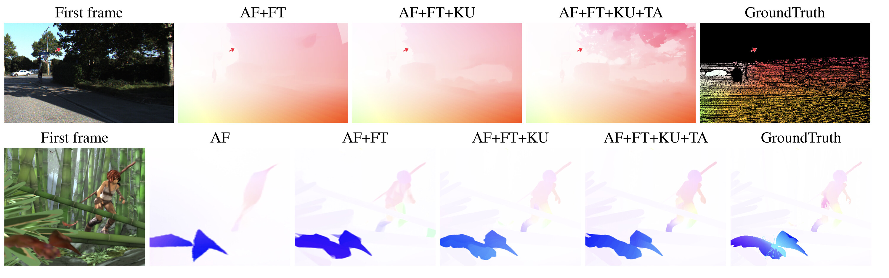
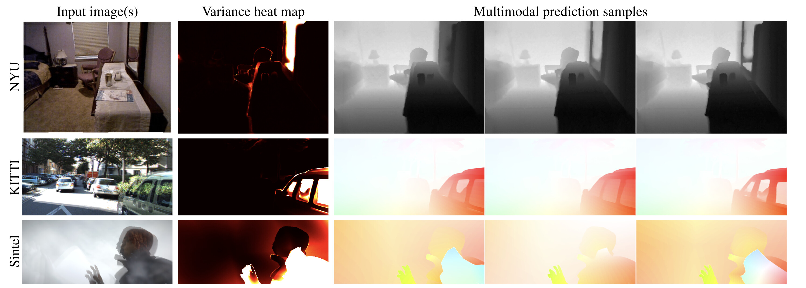
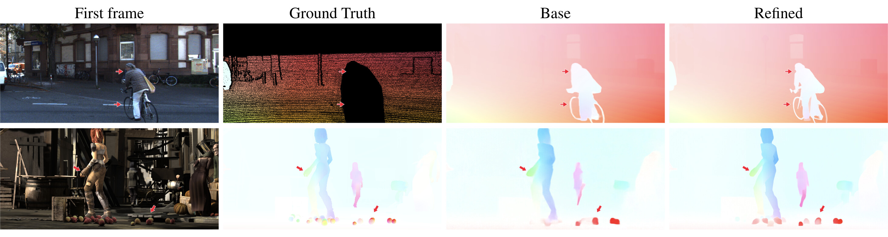
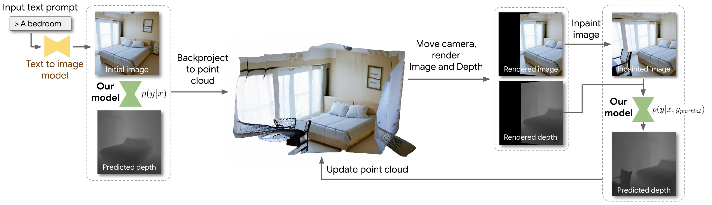

For our pretrained model, refinement helps correct wrong flow and adds details to correct flow as shown in the figure above.
The Surprising Effectiveness of Diffusion Models for Optical Flow and Monocular Depth Estimation

Abstract
Denoising diffusion probabilistic models have transformed image generation with their impressive fidelity and diversity. We show that they also excel in estimating optical flow and monocular depth, surprisingly, without task-specific architectures and loss functions that are predominant for these tasks. Compared to the point estimates of conventional regression-based methods, diffusion models also enable Monte Carlo inference, e.g., capturing uncertainty and ambiguity in flow and depth. With self-supervised pre-training, the combined use of synthetic and real data for supervised training, and technical innovations (infilling and step-unrolled denoising diffusion training) to handle noisy-incomplete training data, and a simple form of coarse-to-fine refinement, one can train state-of-the-art diffusion models for depth and optical flow estimation. Extensive experiments focus on quantitative performance against benchmarks, ablations, and the model's ability to capture uncertainty and multimodality, and impute missing values. Our model, DDVM (Denoising Diffusion Vision Model), obtains a state-of-the-art relative depth error of 0.074 on the indoor NYU benchmark and an Fl-all outlier rate of 3.26% on the KITTI optical flow benchmark, about 25% better than the best published method.
SOTA results on optical flow and monocular depth estimation
Our model achieves state-of-the-art results on the public test benchmark for optical flow estimation on KITTI and for monocular depth estimation on NYU.Synthetic training data
AutoFlow (AF) has recently emerged as an effective dataset for optical flow pre-training. Interestingly, we find that diffusion models trained with AutoFlow alone tend to provide very coarse flow estimates and can hallucinate shapes. The addition of FlyingThings (FT), Kubric (KU), and TartanAir (TA) remove the AF-induced bias toward polgonal-shaped regions, and significantly improve flow quality on fine detail, e.g. trees, thin structures, and motion boundaries. Modified diffusion training for sparse label maps

Multimodal predictions
One strength of diffusion models is their ability to capture complex multimodal distributions. This can be effective in representing uncertainty, for example, in cases of transparent, translucent, or reflective cases. Above figure shows multiple samples on the NYU, KITTI, and Sintel datasets, showing that our model captures multimodality and provides plausible samples when ambiguities exist.
Zero-shot coarse to fine refinement

Zero-shot depth completion and text to 3D

Another interesting property, arising the iterative refinement nature, of diffusion models is the ability to perform conditional inference zero-shot. We leverage this to build a simple text-to-3D scene generation pipeline by combining our model with existing text-to-image (Imagen) and text-conditioned image completion (Imagen Editor) models as shown in the figure above. Below are 3D point clouds of some scenes generated from the respective text prompts (subsampled 10x for fast visualization).
3D
Caption: A kitchen
3D
Caption: A bedroom
Below are more text to RGB-D results from our proposed system.
Caption: A living room
Caption: A library
Caption: A meeting room
Caption: A movie theatre
BibTeX
@inproceedings{
saxena2023the,
title={The Surprising Effectiveness of Diffusion Models for Optical Flow and Monocular Depth Estimation},
author={Saurabh Saxena and Charles Herrmann and Junhwa Hur and Abhishek Kar and Mohammad Norouzi and Deqing Sun and David J. Fleet},
booktitle={Thirty-seventh Conference on Neural Information Processing Systems},
year={2023},
url={https://openreview.net/forum?id=jDIlzSU8wJ}
}